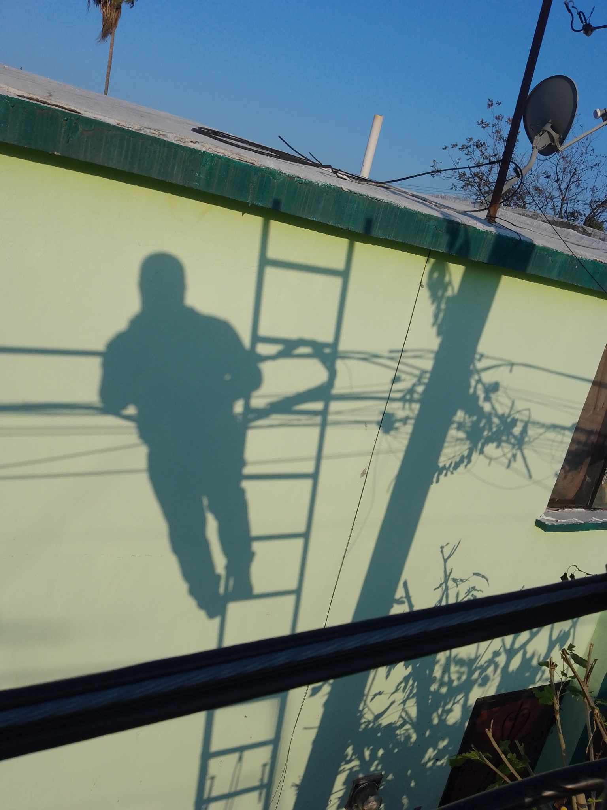
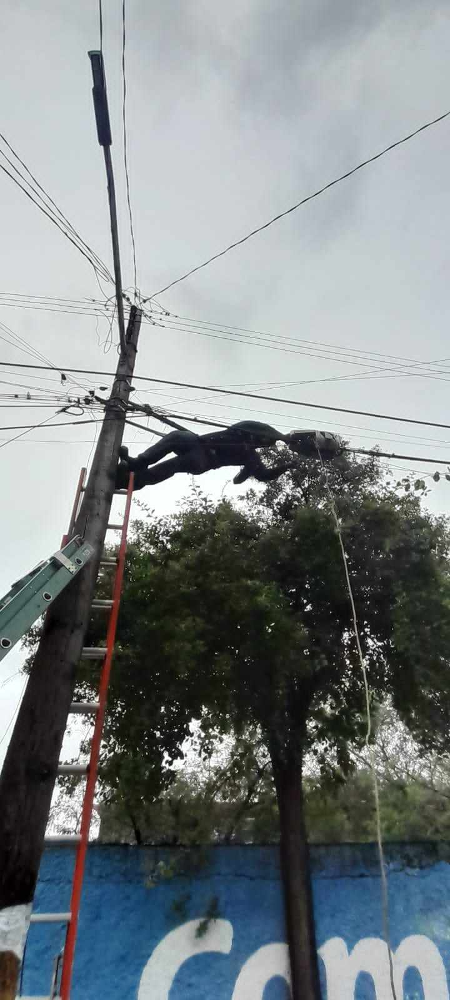
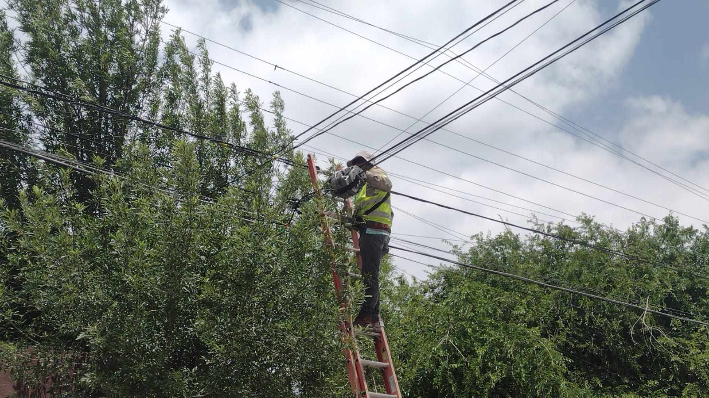
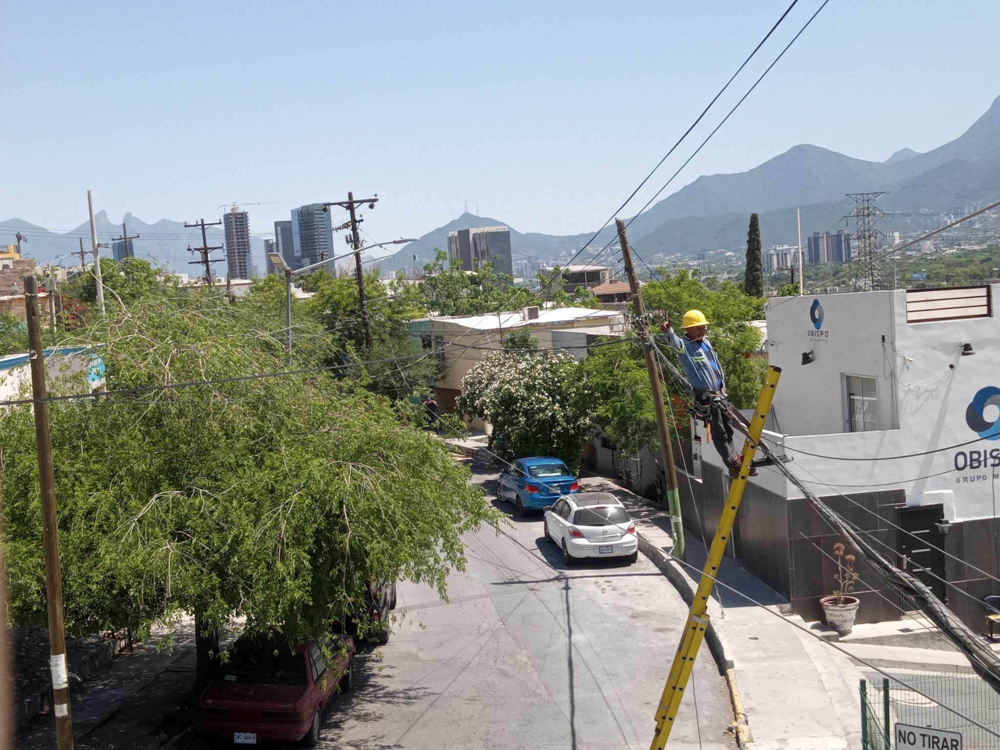
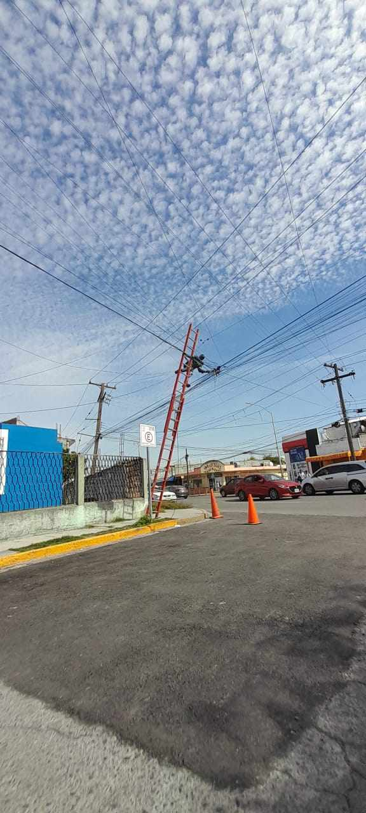
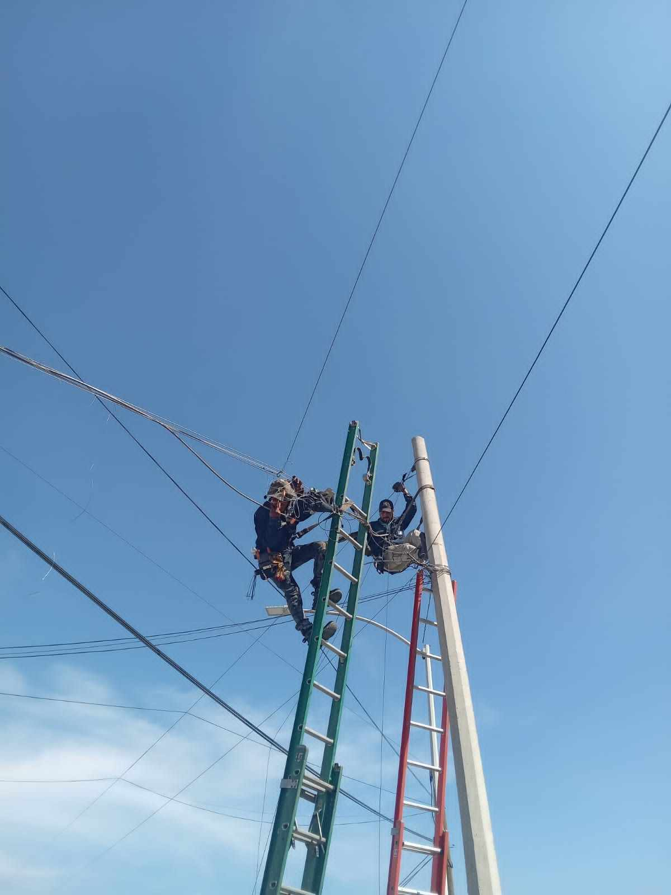
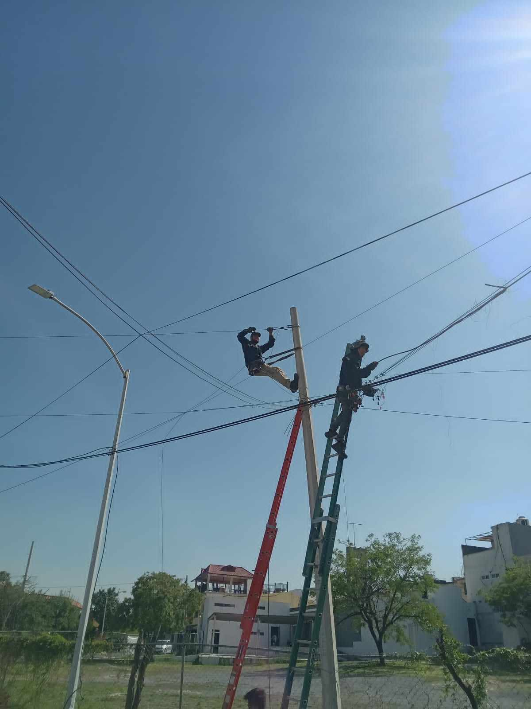

Numero celular 📲 55-70-67-09-73
Correo: laldair855@gmail.com
Aqui podras conocer a detalle sobre mi experiencia laboral, academica y algo de mi información personal todo esto con el fin
de mejorar mi presentación a la hora de buscar trabajo me solicitan mi cv o solicitud de empleo y trato de no usar papeles porque
estorban y contaminan mucho a caso que sea necesario lo utilizo. A lo largo de mis años e conocido muchos tipos de patrones o jefes y eso
me ha servido mucho para mejorar y aprender distintas habilidades, comportamientos, facilidad de palabra y hasta el día de hoy gracias a eso me
considero una persona trabajadora y responsable ya que llevo haciendolo desde que tenia 14 años en el area de ventas y atención a clientes,
prestación de servicios como; instalaciones de redes de fibra oprtica, coaxial, conexion y activación de equipos, atención domiciliaria etc .
EXPERIENCIA LABORAL
Refacciones y complementos Diesel/Tezoyuca,Edo Méx/Atención a clientes y área de producción.
Me desempeñaba en las ventas de mostrador y la producción de balatas para camiones o autobuses.
Oggi Jeans/Chiconcuac,Edo Méx/ventas y almacén.
Mi función en ese trabajo era generar ventas diarias y mantener en orden el almacén.
IZZI/Monterrey Nuevo León/Auxiliar en construcción de redes.
En este empleo me desempeñaba en la construcción de redes de internet con fibra óptica y coaxial, teníamos que montar o tender la red o desmontar
las líneas antiguas que ya eran inexistentes.
Megacable/Ciudad de México/Tecnico Instalador.
En este empleo me desempeñaba en la instalación de servicios para televisión e internet, al igual que darle mantenimiento
preventivo y correctivo a servicios ya instalados.
Evidencias de experiencia laboral

Trabajo en alturas

Trabajo en alturas

Trabajo en alturas

Trabajo en alturas

Trabajo en alturas

Trabajo en alturas

Trabajo en alturas
Educación academica
Ingrese a la primaria Justo Sierra en el 2003 y conclui en el 2009.
Continue en la secundaria Pino Suarez en el 2010 y conclui en el 2013.
Estudie la preparatoria en la Epo 142 en el 2017 y conclui en el 2020.
Ingrese a la universidad UAEMex en el 2021 y actualmente esta trunca.
Habilidades y conocimientos
Uso de software para diseño e interpretación de planos para construcción de redes.
Uso de programas para desarrollo web, paquetería office y configuración de sistemas operativos
Manejo y uso de herramientas para instalación de redes LAN Y MAN.
Conexión de equipos para coaxial y fibra óptica.
Manejo de carros estándar y automáticos.
Nivel de ingles A1-A2: Básico.